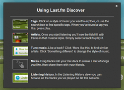

LastFM
Zum Verständnis dieses Artikels sind folgende Seiten hilfreich:
Last.fm ist ein Internetradio auf Basis von sozialer Software („personalised online radio station“), das entwickelt wurde, um Nutzern auf Basis ihrer Hörgewohnheiten neue Musik, Menschen mit ähnlichem Musikgeschmack und Konzerte in ihrer Umgebung empfehlen zu können. Es ist eine ehemalige Schwesterseite von Audioscrobbler, mit dem es sich früher eine Musikdatenbank teilte. Plattenfirmen und Musiker werden ermuntert, Last.fm Lizenzen zum Abspielen ihrer Musik zu erteilen. Last.fm hat derzeit ein Verzeichnis von über 80 Millionen einzelner Stücke und davon sieben Millionen für sein Internetradio zum Streaming sowie 150.000 kostenlose MP3-Downloads vorrätig.
Last.fm fusionierte am 9. August 2005 mit Audioscrobbler und übernahm somit auch dessen Funktionen. Diese speichern alle auf dem PC abgespielten Musikstücke in einer Datenbank, erzeugen individuelle oder globale Charts und verbinden Benutzer mit musikalischen Nachbarn. Bei musikalischen Nachbarn handelt es sich um Personen, welche einen ähnlichen Musikgeschmack haben. Aus der Datenbank werden Schnittmengen aus den Interpreten der Lieder innerhalb des angemeldeten Personenkreises errechnet. Stimmen viele Interpreten mit einer anderen Person überein, wird diese als musikalischer Nachbar bezeichnet. (Quelle: Wikipedia)
Hinweis:
Der Radiodienst von Last.fm wurde mit dem 28.04. 2014 endgültig abgeschaltet, eine Wiedergabe von Radiostationen ist auf externen Playern nicht mehr möglich. Der "interne" Player auf der Last.fm-Seite gibt nur noch entsprechende YouTube-Videos wieder (wenn diese vorhanden und zudem greifbar sind); Last.fm hat das Streamen komplett eingestellt, schon zuvor waren viele Songs nur noch auf Spotify verlinkt. Nur das "Scrobbeln" mit externen Playern ist noch möglich.
Internetseite¶
Die Internetseite von Last.fm bietet eine Vielzahl von Einstellungsmöglichkeiten und Rubriken, mit denen die Nutzung für die eigenen Bedürfnisse angepasst werden kann. Sinnvoll ist es, sich nach der Nutzung wieder auszuloggen, um unbefugtem Zugriff vorzubeugen.
Wer möchte, kann der Gruppe ubuntuusers.de  beitreten.
beitreten.
Einstellungen¶
Um die persönlichen Daten zu konfigurieren, ruft man zuerst die Internetseite von Last.fm auf und loggt sich mit seinem Benutzernamen und dazugehörigen Kennwort ein.
Nun auf "Einstellungen" klicken. Hier gibt es einige Einstellungsmöglichkeiten:
| Einstellungsmöglichkeiten | |
| Menüpunkt | Beschreibung |
| "Benutzerkonto" | In dieser Rubrik ist es möglich, einen eigenen Avatar hochzuladen, persönliche Daten einzugeben, Zeitzone, eine Signatur hinzuzufügen et cetera. Kurz: Alle Daten, die man in Last.fm preisgeben möchte. Was das sein soll, muss jeder selber entscheiden... |
| "Webseite" | Hier kann man die Webseite konfigurieren, wie beispielsweise die Darstellung, oder ob man Künstlernamen übersetzt haben will. |
| "Dashboard" | Wie seine persönliche Übersichtsseite (Dashboard) aussehen soll, kann man hier einstellen. |
| "Benachrichtigungen" | Einstellungen, wie z.B. ob und wie man benachrichtigt werden will, wenn man eine Empfehlung bekommt, kann man hier einstellen. |
| "Privatsphäre" | Falls man nur von Freunden oder Nachbarn Nachrichten bekommen will oder einen Benutzer blockieren will, kann man hier die nötigen Einstellungen treffen. |
| "Password" | Hier kann man sein Kennwort ändern. |
| "Profildaten" | In diesem Reiter können das Profil zurückgesetzt sowie der Account gelöscht werden. |
| "Abonnement" | Daten zu einem ggf. abgeschlossenen Abonnement. |
| "Anwendungen" | Überblick über die Anwendungen, die auf die eigene Last.fm-Seite zugreifen dürfen. |
| "Sprache ändern" | Um die Sprache zu ändern, wählt man einfach ganz unten auf jeder Internetseite unter "Browse Last.fm in:" die gewünschte Sprache aus. |
Taggen¶
Um Tags zu seinem Benutzerprofil hinzuzufügen, muss man dies in der Software oder auf der jeweiligen Seite von Titel, Künstler oder ein Album gehen und dort durch einen Klick auf "Eigene Tags hinzufügen" einen Tag hinzufügen.
|  |
| Last.fm Discover, © last.fm |
"Freie" Musik auf Last.fm¶
Unter Last.fm-Discover  ließen sich Titel von Künstlern vollständig, und nach eigener Wahl wiedergeben, die ihre Musik dafür frei gegeben hatten. Auf der Seite konnte über vergebene Tags navigiert werden. Bei Angabe eines Tags erschienen weitere, verwandte Tags, es konnte entweder ein Tag-Radio direkt gestartet, oder auch weiter spezifiziert werden. Nach Wiedergabebeginn erschienen etliche Titel auf der Seite, die auch direkt ausgewählt werden konnten, ansonsten lieft der Sender mit gleich getaggten Stücken weiter. Wenn einem ein Stück gefielt, ließt sich angeben, dass mehr dieser Art Musik gespielt werden sollte, oder auch etwas anders gewünscht wurde. In der Historie der gespielten Stücke konnte man blättern, und auch gezielt Stücke wiederholen, oder sie als Grundlage für eigene "Mixes" verwenden. Mit Einstellung des Radio-Dienstes ist diese Seite zur Wiedergabe nicht mehr nutzbar.
ließen sich Titel von Künstlern vollständig, und nach eigener Wahl wiedergeben, die ihre Musik dafür frei gegeben hatten. Auf der Seite konnte über vergebene Tags navigiert werden. Bei Angabe eines Tags erschienen weitere, verwandte Tags, es konnte entweder ein Tag-Radio direkt gestartet, oder auch weiter spezifiziert werden. Nach Wiedergabebeginn erschienen etliche Titel auf der Seite, die auch direkt ausgewählt werden konnten, ansonsten lieft der Sender mit gleich getaggten Stücken weiter. Wenn einem ein Stück gefielt, ließt sich angeben, dass mehr dieser Art Musik gespielt werden sollte, oder auch etwas anders gewünscht wurde. In der Historie der gespielten Stücke konnte man blättern, und auch gezielt Stücke wiederholen, oder sie als Grundlage für eigene "Mixes" verwenden. Mit Einstellung des Radio-Dienstes ist diese Seite zur Wiedergabe nicht mehr nutzbar.
Es waren ca. 2 Millionen Tracks abrufbar, der Service konnte frei genutzt werden; es war weder ein Einloggen noch überhaupt eine Nutzerkonto nötig. Wenn man sich einloggt hatte, wurden die gespielten Stücke gescrobbelt und auf der eigenen Seite mit aufgeführt.
Sonstiges¶
Musik¶
Neue Musik kann man auf Last.fm - Music kennenlernen. Die Seite lädt zum Durchstöbern ein - es gibt hunderte von Stücken, Künstlern und Genres zu entdecken.
Eine der interessantesten Eigenschaften von Last.fm – die Empfehlung ähnlicher Musik – kann auch über alternative Angebote genutzt werden. Eine Empfehlung wäre z.B. FindMU .
Widgets¶
Auf Last.fm - Widgets gibt es Beispiele wie z.B. die eigene Homepage mit den eigenen Charts aufgepeppt werden kann.
- Erstellt mit Inyoka
-
 2004 – 2017 ubuntuusers.de • Einige Rechte vorbehalten
2004 – 2017 ubuntuusers.de • Einige Rechte vorbehalten
Lizenz • Kontakt • Datenschutz • Impressum • Serverstatus -
Serverhousing gespendet von